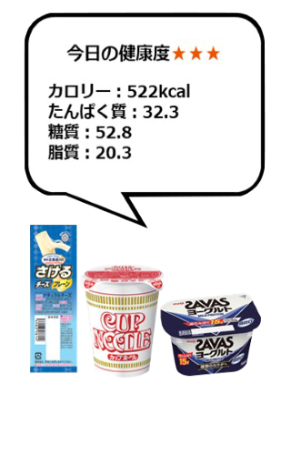

//成功したランダム表示（重複あり）
        function doreka(){
     var a = Math.random() * 3;
     var n = Math.floor( a ) +1;
     var koreni = "images/menu"+n+".png";
     document.getElementById("area1").src = koreni;
}
//成功したランダム表示終了


//以下menu1貼り付け
<div class="pagebody">
        <p></p>
 <ons-button class="retry-btn" onclick="doreka()">
            OTHER MENU
        </ons-button>
</div>
